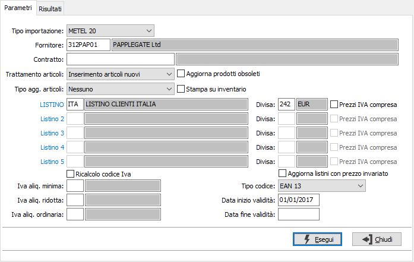
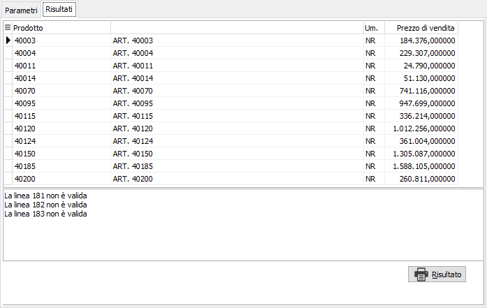

Importazione listini
Il programma consente di importare listini esterni, precedentemente configurati.
La maschera si compone di due sezioni: Parametri e Risultati. La sezione Parametri consente di definire i criteri di generazione.

TIPO IMPORTAZIONE: indicare la tipologia di importazione, definita con l'apposita procedura, da utilizzare per l'importazione.
FORNITORE: codice del fornitore relativo al listino che si sta importando, campo obbligatorio. Sul campo sono attive le funzioni di ricerca (F9).
CONTRATTO: eventuale codice del contratto da aggiornare. Sul campo sono attive le funzioni di ricerca (F9).
TRATTAMENTO ARTICOLI: I valori possibili sono:
Non inserire articoli nuovi: non sarà effettuato alcun inserimento di nuovi prodotti.
Inserimento articoli nuovi: saranno inseriti i nuovi prodotti presenti nel file di importazione.
Lettura codice fornitore: se già presente una codifica di tipo fornitore per il prodotto e il file di importazione riporta tale codice, sarà possibile leggere il codice fornitore (DsCodProdotto) presente in ArticoliCliFor ed importare il listino costi.
Lettura codice fornitore (no blocco): stesso comportamento del "Lettura codice fornitore". Si differenzia nell'ipotesi che nel file siano presenti righe di importazione di prodotti o codifiche non presenti in archivio. Con questa opzione la procedura non si bloccherà e tale record non sarà trattato.
TIPO AGGIORNAMENTO ARTICOLI: definisce quali dati aggiornare relativamente ai prodotti: nessuno, prezzo, dati anagrafici, prezzo e dati anagrafici.
STAMPA SU INVENTARIO: utilizzato per essere memorizzato su nuovi prodotti. Definisce se il prodotto può essere stampato sull'inventario (casella con segno di spunta).
LISTINO (1-5): codici dei listini da aggiornare/generare, in relazione a come definita l'importazione. Sul campo sono attive le funzioni di ricerca (F9).
DIVISA (1-5): codici delle divise da combinare ai codici listino. Sul campo sono attive le funzioni di ricerca (F9).
PREZZI IVA COMPRESA: definisce se il prezzo presente sul file di importazione è comprensivo di Iva (casella con segno di spunta).
RICALCOLO CODICE IVA: definisce se effettuare il ricalcolo dell'Iva (casella con segno di spunta). Da utilizzare se sul file di importazione è presente un'aliquota Iva che non corrisponde ai codici Iva di OS1.
IVA aliquota minima: Indicare il codice Iva per l'aliquota minima. Da utilizzare se sul file di importazione è presente un'aliquota Iva che non corrisponde ai codici Iva di OS1. Sul campo sono attive le funzioni di ricerca (F9).
IVA aliquota ridotta: Indicare il codice Iva per l'aliquota ridotta. Da utilizzare se sul file di importazione è presente un'aliquota Iva che non corrisponde ai codici Iva di OS1. Sul campo sono attive le funzioni di ricerca (F9).
IVA aliquota ordinaria: Indicare il codice Iva per l'aliquota ordinaria. Da utilizzare se sul file di importazione è presente un'aliquota Iva che non corrisponde ai codici Iva di OS1. Sul campo sono attive le funzioni di ricerca (F9).
AGGIORNA LISTINI CON PREZZO INVARIATO: se spuntato saranno comunque scritti tutti i listini importati anche se già presenti e con stesso prezzo.
TIPO CODICE: identifica il tipo di codice a barre eventualmente presente sul file di importazione.
DATA INIZIO VALIDITÀ: definisce la data di inizio validità da inserire sui dati generati, se non già presente sul file di importazione.
DATA FINE VALIDITÀ: definisce la data di fine validità da inserire in automatico sui dati generati, se non già presente sul file di importazione.
La pressione del pulsante Esegui, dopo la conferma all'operazione, richiede di selezionare il file da cui effettuare l'importazione ed inizia l'elaborazione.
Al termine delle operazioni nella sezione Risultati saranno visualizzati i dati importati e, nel riquadro in basso, gli eventuali errori occorsi.

Tramite il pulsante Risultato è possibile stampare un report relativo a quanto visualizzato.